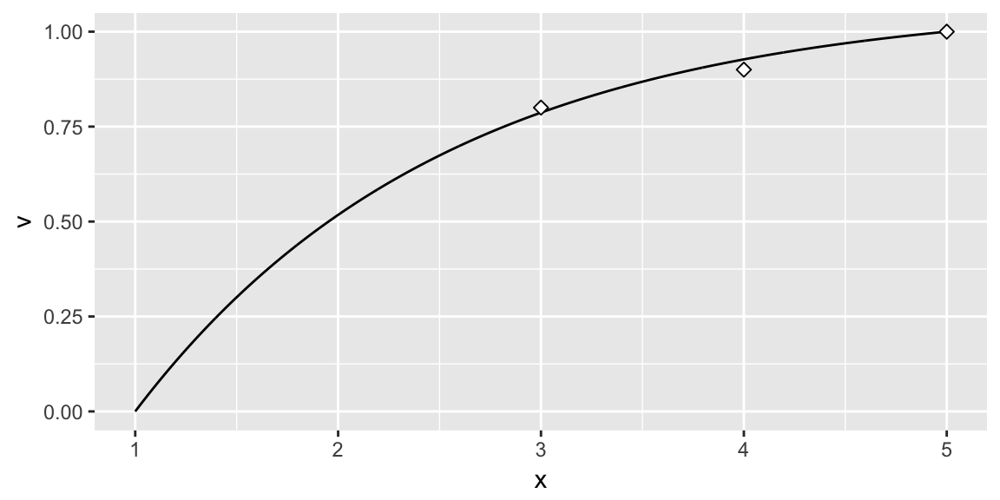
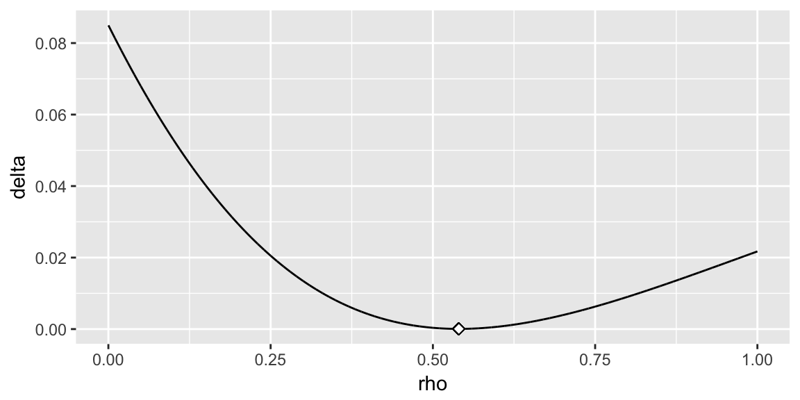
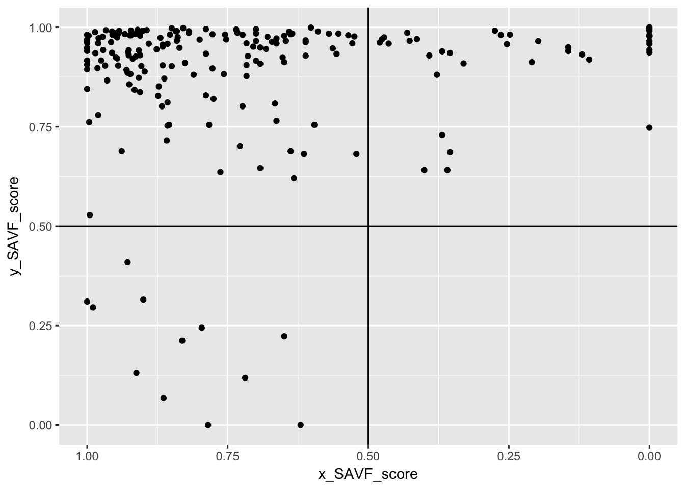

A significant question in applying the KPM is how to categorize purchased products and services within the matrix. Organizations vary in how they measure supply risk and profit impact. Furthermore, some organizations may choose to measure their purchases against different dimensions; however, the fundamental purpose of the matrix remains. For our purpose, we assume that the organization has developed a means to condense their measurement of each dimension to a single value. For example, many organizations use an index (i.e. IBISWorld Buyer Power Score) to measure one of the dimensions. Or some organizations develop an indexed value function that generates a single value score for many attributes (i.e. profit impact can be a function of volume purchased, expected growth in demand, percent of total purchase cost, impact on product quality and business growth, etc.). However, once you have a single value that represents each dimension, subjectivity still largely drives how they are positioned in the KPM. The kraljicMatrix package was designed to assist with this concern and the examples that follow walk you through how to implement kraljicMatrix functions.
Implementation of kraljicMatrix
The x and y attributes are simply evaluation measures. They enable each product and service to obtain a score for each dimension being measured. For example, the x attribute score (1-5 in .01 increments) could be the IBISWorld Buyer Power Score measuring supply market complexity. However, to plot these attributes on the KPM matrix we need to normalize the value scores such that the values are between 0-1. To do this we can use an exponential single attribute value function (SAVF). For example, let \(v_x(x_i)\) represent the normalized value of the x attribute such that \(x^0\) and \(x^*\) are the lowest and highest preferred value of attribute x respectively. Thus, \(v_x(x^0)=0\) and \(v_x(x^*)=1\). Consequently, let \(v_x(x_i)\) be the SAVF of exponential form whereby each \(x_i\) is an input and \(\rho_x\) is the exponential constant for \(v_x(x_i)\):
\[v_x(x_i)=\frac{1-e^{[-(x_i-x^0)/\rho_x]}}{1-e^{[-(x^*-x^0)/\rho_x]}} \forall i \in PSC\]
However, prior to applying the SAVF to our x and y attributes we must first identify the appropriate \(\rho\) value. The benefit of applying an exponential SAVF is that it can take on many forms of increasing rates, along with aligning to a linear value function. Consequently, if certain x attribute values are valued more than other values an exponential SAVF will capture this utility curve. To identify the appropriate exponential rate, subject matter expert (SME) inputs are typically evaluated and an exponential rate that most closely matches the preffered values provided by the SMEs is chosen. Thus, let’s assume for our given x attribute the SME inputs suggest that x attribute values of 3, 4, & 5 provide a utility score of .75, .90 & 1.0 respectively (this represents a decreasing rate of return utility curve). Knowing that our x attribute is bounded between 1 and 5 we can search for a rho value between 0-1 that provides the best fit utility function using the SAVF_preferred_rho function.
SAVF_preferred_rho(desired_x = c(3, 4, 5),
desired_v = c(.8, .9, 1),
x_low = 1,
x_high = 5,
rho_low = 0,
rho_high = 1)
## [1] 0.6531
Thus, we can see that \(\rho = 0.6531\) provides the best fit exponential SAVF. We can illustrate this two ways. First, we can use SAVF_plot to plot the single attribute utility curve compared to the subject matter desired values.
SAVF_plot(desired_x = c(3, 4, 5),
desired_v = c(.8, .9, 1),
x_low = 1,
x_high = 5,
rho = 0.6531)

We can also visualize the errors of the \(\rho\) search space with SAVF_plot_rho_error, which plots the squared error terms for all \(\rho\) values within the \(\rho\) search space to illustrate the preferred rho that minimizes the squared error between subject matter desired values and exponentially fitted scores.
SAVF_plot_rho_error(desired_x = c(3, 4, 5),
desired_v = c(.75, .9, 1),
x_low = 1,
x_high = 5,
rho_low = 0,
rho_high = 1)

Once we’ve identified the preferred \(\rho\) value, we can now apply the exponential SAVF with SAVF_score to normalize our attributes based on our utility curve.
# using dplyr to add a new variable while preserving existing data
library(dplyr)
# here we are assuming we found the appropriate rho value for the y attribute using
# the same process as mentioned above
psc <- psc %>%
mutate(x_SAVF_score = SAVF_score(x_attribute, 1, 5, .653),
y_SAVF_score = SAVF_score(y_attribute, 1, 10, .70))
psc
## # A tibble: 200 × 5
## PSC x_attribute y_attribute x_SAVF_score y_SAVF_score
## <chr> <dbl> <dbl> <dbl> <dbl>
## 1 D233 3.01 4.84 0.7887459 0.9336977
## 2 F352 4.34 5.64 0.9573299 0.9629164
## 3 T713 3.37 4.30 0.8495938 0.9023958
## 4 K833 2.67 5.53 0.7165401 0.9598009
## 5 Q121 3.48 4.33 0.8655080 0.9044624
## 6 C791 3.32 7.32 0.8419735 0.9898314
## 7 Y207 3.48 5.42 0.8655080 0.9564360
## 8 W439 2.47 3.35 0.6659448 0.8084720
## 9 N290 1.66 4.02 0.3778582 0.8808636
## 10 C251 1.00 7.47 0.0000000 0.9910284
## # ... with 190 more rows
Now that we have the normalized x and y attribute utility scores we can proceed with plotting each PSC within the Kraljic matrix with kraljic_matrix.

This illustrates that most of our PSCs fall in the “Leverage” (upper left) quadrant while a few fall in the “Strategic” (upper right) and “Non-critical” (lower left) quadrants and no PSCs fall in the “Bottleneck” quadrant. Keep in mind that each category benefits from a different strategic sourcing approach. So decision-makers benefit from understanding specifically which products and services align to each so that they can coordinate the appropriate sourcing strategy for that particular product or service. We can easily do this with the kraljic_quadrant function.
psc %>%
mutate(quadrant = kraljic_quadrant(x_SAVF_score, y_SAVF_score))
## # A tibble: 200 × 6
## PSC x_attribute y_attribute x_SAVF_score y_SAVF_score quadrant
## <chr> <dbl> <dbl> <dbl> <dbl> <chr>
## 1 D233 3.01 4.84 0.7887459 0.9336977 Leverage
## 2 F352 4.34 5.64 0.9573299 0.9629164 Leverage
## 3 T713 3.37 4.30 0.8495938 0.9023958 Leverage
## 4 K833 2.67 5.53 0.7165401 0.9598009 Leverage
## 5 Q121 3.48 4.33 0.8655080 0.9044624 Leverage
## 6 C791 3.32 7.32 0.8419735 0.9898314 Leverage
## 7 Y207 3.48 5.42 0.8655080 0.9564360 Leverage
## 8 W439 2.47 3.35 0.6659448 0.8084720 Leverage
## 9 N290 1.66 4.02 0.3778582 0.8808636 Strategic
## 10 C251 1.00 7.47 0.0000000 0.9910284 Strategic
## # ... with 190 more rows
Lastly, it is important to keep in mind that decision-makers may weight the importance of each attribute differently. Consequently, due to certain market environments, decision-makers may weight the x attribute (i.e. supply risk) of greater importance than the y attribute (i.e. profit impact). Thus, we can prioritize PSCs based on this preference by applying a multi-attribute value function (MAVF) with swing weights. Swing weight values for x and y attributes (\(w_x\) and \(w_y\) respectively) are typically elicited from SMEs. This allows for calculation of the interaction swing weight \(w_{xy} = 1 - w_x - w_y\). Thus, we can calculate the MAVF as outlined by Keeney and Raiffa (1993):
\[V(x,y) = w_x v_x (x) + w_y v_y (y) + w_{xy} v_x (x) v_y (y)\]
Thus, we can apply the MAVF_score function to compute the multi-attribute value score based on x and y attribute utility scores and their respective swing weights. So if through discussions with decision-makers we identify swing weight values of 0.65 and 0.35 for the x and y attributes respectively, we can obtain the computed MAVF score for each PSC:
psc %>%
mutate(MAVF = MAVF_score(x_SAVF_score, y_SAVF_score, 0.65, 0.35))
## # A tibble: 200 × 6
## PSC x_attribute y_attribute x_SAVF_score y_SAVF_score MAVF
## <chr> <dbl> <dbl> <dbl> <dbl> <dbl>
## 1 D233 3.01 4.84 0.7887459 0.9336977 0.8394790
## 2 F352 4.34 5.64 0.9573299 0.9629164 0.9592852
## 3 T713 3.37 4.30 0.8495938 0.9023958 0.8680745
## 4 K833 2.67 5.53 0.7165401 0.9598009 0.8016814
## 5 Q121 3.48 4.33 0.8655080 0.9044624 0.8791420
## 6 C791 3.32 7.32 0.8419735 0.9898314 0.8937237
## 7 Y207 3.48 5.42 0.8655080 0.9564360 0.8973328
## 8 W439 2.47 3.35 0.6659448 0.8084720 0.7158293
## 9 N290 1.66 4.02 0.3778582 0.8808636 0.5539101
## 10 C251 1.00 7.47 0.0000000 0.9910284 0.3468599
## # ... with 190 more rows
This allows us to quickly dissect our PSCs. For example, if decision-makers are most concerned with the “Leverage” quadrant but want to assess the top 10 PSCs based on the decision-makers preferences of the attributes we can efficiently make this assessment. This identifies the top 10 PSCs that are most likely to benefit from a strategic sourcing approach specifically designed for “Leverage” PSCs.
psc %>%
mutate(MAVF = MAVF_score(x_SAVF_score, y_SAVF_score, 0.65, 0.35),
quadrant = kraljic_quadrant(x_SAVF_score, y_SAVF_score)) %>%
filter(quadrant == "Leverage") %>%
top_n(10, wt = MAVF)
## # A tibble: 10 × 7
## PSC x_attribute y_attribute x_SAVF_score y_SAVF_score MAVF
## <chr> <dbl> <dbl> <dbl> <dbl> <dbl>
## 1 Y357 5.00 6.55 1.0000000 0.9812541 0.9934389
## 2 E103 4.46 7.71 0.9665150 0.9927003 0.9756799
## 3 C432 4.65 6.05 0.9796633 0.9726273 0.9772007
## 4 P402 5.00 5.82 1.0000000 0.9675243 0.9886335
## 5 Q255 4.95 6.41 0.9973714 0.9791345 0.9909885
## 6 H426 5.00 5.58 1.0000000 0.9612468 0.9864364
## 7 E908 4.75 7.11 0.9859554 0.9879299 0.9866465
## 8 X634 5.00 5.19 1.0000000 0.9485047 0.9819766
## 9 O288 5.00 5.00 1.0000000 0.9409177 0.9793212
## 10 V870 5.00 5.88 1.0000000 0.9689357 0.9891275
## # ... with 1 more variables: quadrant <chr>
And finally, since our swing weight inputs are subjective in nature we may wish to perform a senstivity analysis on these swing weights to see their impact on MAVF scores. The MAVF_sensitivity function executes a sensitivity analysis by performing a Monte Carlo simulation with 1000 trials for each product or service (row). Each trial randomly selects a weight from a uniform distribution between lower and upper bound swing weight parameters and calculates the mult-attribute utility score. From these trials, summary statistics for each product or service (row) are calculated and reported for the final output.
MAVF_sensitivity(psc,
x = x_SAVF_score,
y = y_SAVF_score,
x_wt_min = .55,
x_wt_max = .75,
y_wt_min = .25,
y_wt_max = .45) %>%
select(PSC, starts_with("MAVF"))
## # A tibble: 200 × 8
## PSC MAVF_Min MAVF_1st_Q MAVF_Median MAVF_Mean MAVF_3rd_Q MAVF_Max
## <chr> <dbl> <dbl> <dbl> <dbl> <dbl> <dbl>
## 1 D233 0.8151 0.8296 0.8391 0.8393 0.8490 0.8637
## 2 F352 0.9518 0.9573 0.9593 0.9593 0.9616 0.9667
## 3 T713 0.8468 0.8619 0.8678 0.8681 0.8747 0.8893
## 4 K833 0.7720 0.7877 0.8010 0.8013 0.8149 0.8308
## 5 Q121 0.8593 0.8735 0.8790 0.8792 0.8852 0.8990
## 6 C791 0.8774 0.8857 0.8934 0.8935 0.9011 0.9098
## 7 Y207 0.8811 0.8909 0.8970 0.8972 0.9035 0.9135
## 8 W439 0.6771 0.7033 0.7152 0.7158 0.7290 0.7544
## 9 N290 0.4954 0.5257 0.5531 0.5532 0.5803 0.6114
## 10 C251 0.2478 0.2953 0.3458 0.3453 0.3936 0.4458
## # ... with 190 more rows, and 1 more variables: MAVF_Range <dbl>